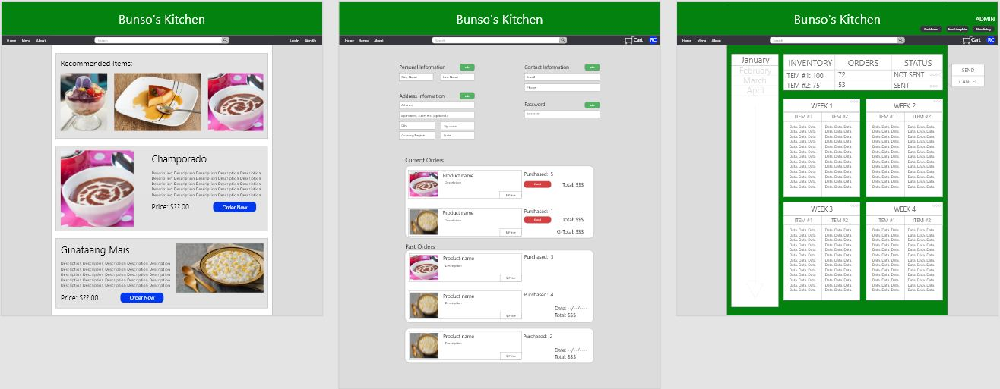
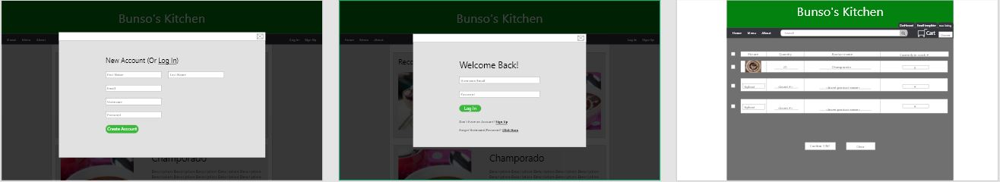
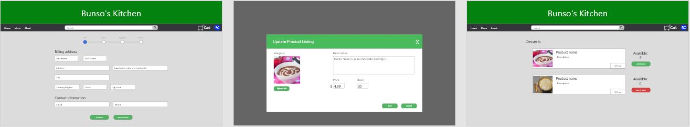

Bunso’s Kitchen Ecommerce
Web Application
Team Name: 6 Stack Apps
Team Members: RJ Cunanan, Ivince Pajarin, Jaime Rivera, Jomari Mayo, Carl Viloria, Duy Huynh
Client: Carl Perez
Adviser: Prof. Haiquan Chen
Background
Our client plans to have a business selling homemade fillipino dessert. The project goal is to help our client kick start his business by creating an eCommerce web application for him to provide his customers a more professional and business-like feeling when they order his desserts through the website.
Scope
The project scope will include: the owner of the business (our client Carl Perez), friends and family (his customers), the developers of the website (our team), and the project manager (Professor Yang).
Currently, our client does not have a website for his customers to order his desserts. We would like to solve that problem by creating him a website that his customers can use to order his desserts in an online format.
The goal of our project is to create him a safe, reliable, and working website so that he is able to kickstart his business and hopefully expand beyond.
Proposed Solution
The project goal is to provide our client with a digital platform where he can sell, advertise, and modify desserts seasonally to local customers. Our team will accomplish this by developing an ecommerce web application that includes both essential and unique features such as a user account system, admin account system, product listing, shopping cart, customer review, and Q&A chatbot just to name a few.
We plan to utilize several technologies during implementation for the project’s front end, back end, and database. In the front end, we will use: HTML, CSS, Bootstrap, Javascript, and React. For the back end and database, we will use: Node.js, Express, and MongoDB.
Highlights
With our project, we will be providing our client with a professional and more official method of making his dessert products accessible to targeted customers as opposed to more casual approaches such as utilizing social media to conduct sales. Additionally, our project will perform as an efficient and user-friendly ecommerce web application that fulfills the needs of both our client and the customers.
By utilizing the MERN stack architecture for our project’s development, our group will be able to accomplish our project’s goal while also giving us all the opportunity to explore a popular industry practice.
Prototypes
List of product features included in prototype:
- Feature 1: User Account Creation
- Feature 2: Customer Account Log-In
- Feature 3: Log-In Error Handling
- Feature 4: List of Products
- Feature 5: Customer Ordering Process
- Feature 6: Customer Cancelling Process
- Feature 7: Email Template Maker
- Feature 8: Updating the product listing
- Feature 9: Online payment transactions
- Feature 10: Owner/Administration received order from customer
- Feature 11: Owner/Administration checks data of previous sales
- Feature 12: Owner/Administration updates stock
- Feature 13: Producer checks items customers have ordered
- Feature 14: Producer finishes producing current order batch
- Feature 15: Database verifies customer’s account
- Feature 16: Database verifies Admin account
- Feature 17: Database tracks customer’s purchases
- Feature 18: User Profile Page
- Feature 19: User Account Information Recovery
- Feature 20: Search Box
- Feature 21: About Page
- Feature 22: User/Customer Review
Example Product Screenshots:



Timeline
Sprint00 (February 1, 2021 - February 21, 2021)
- Secure Project Client
- Produce Project Proposal Document
- Produce Project Charter Document
Sprint01 (February 22, 2021 - March 7, 2021)
- Produce Business Event Table
- Produce Context Diagram
Sprint02 (March 8, 2021 - March 22, 2021)
- Create 3 possible Low-Fidelity Prototypes implementing basic features
- Low-Fidelity Prototype A
- Low-Fidelity Prototype B
- Low-Fidelity Prototype C
- Present Low-Fidelity Prototypes to Client
- Create single finalized Low-Fidelity Prototype utilizing Client’s feedback
Sprint03 (March 29, 2021 - April 12, 2021)
- Create High-Fidelity Prototype draft utilizing AdobeXD
- Present High-Fidelity Prototype to Client
- Revise High-Fidelity Prototype according to Client’s feedback
- Start creating the Product Backlog
- Create a plan for the rest of the semester
Sprint04 (April 12, 2021 - April 27, 2021)
- Identify any missing project features
- High-Fidelity Prototype Revision
- Continue work on Product Backlog
- Production Environment Research
- Prepare Project Presentation Slides
Sprint05 (April 27, 2021 - May 11, 2021)
- Finalize High-Fidelity Prototype
- Finalize Product Backlog/Taskboard (Flyingdonut) Management
- Create Project Webpage
- Create Prototype Document
- Create Product Backlog Document